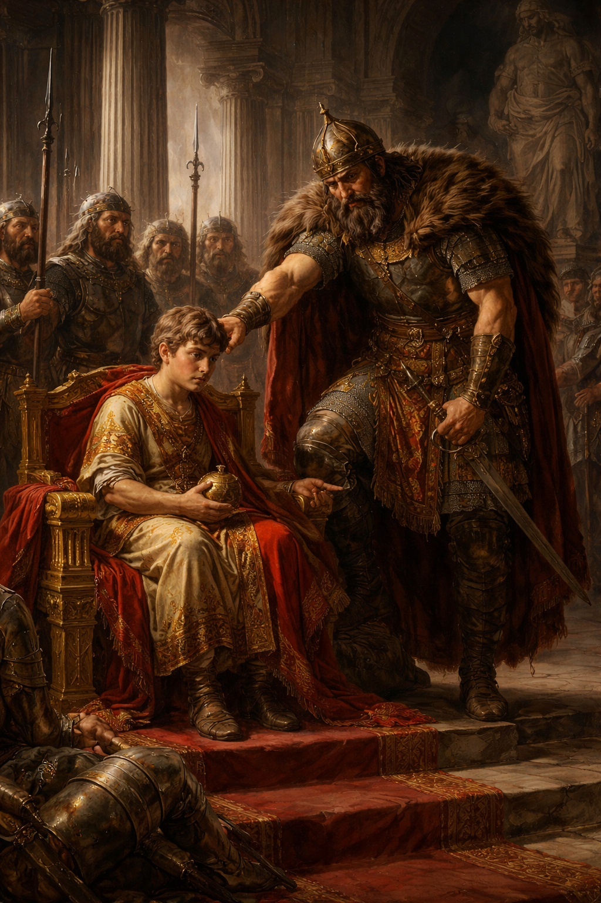
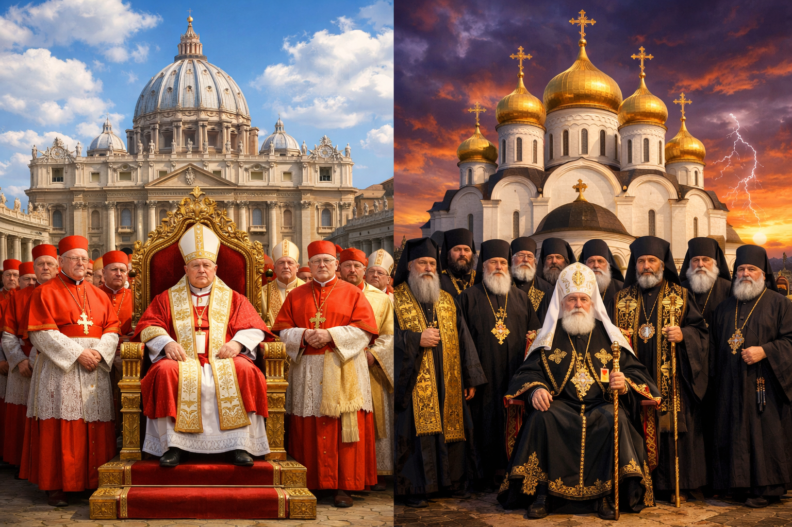
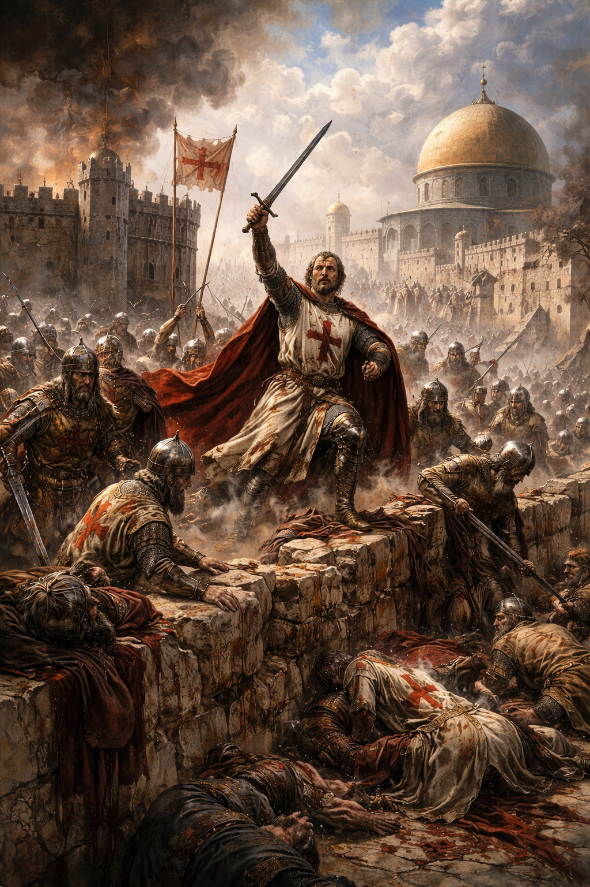
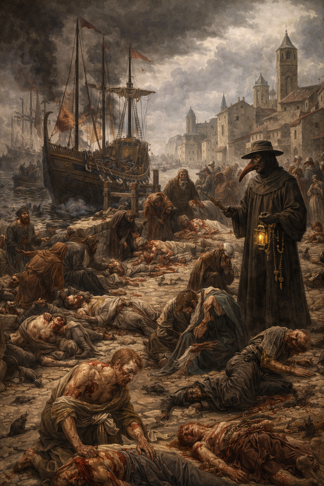
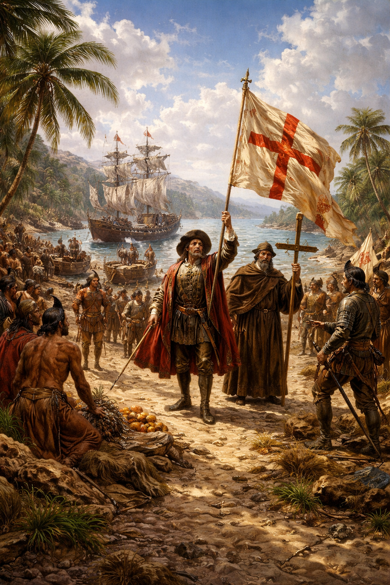

476
A Nyugatrómai Birodalom bukása (a középkor kezdete).

1054
Egyházszakadás (a kereszténység különválása ortodox és katolikus ágra).

1099
Jeruzsálem elfoglalása (az első keresztes hadjárat során).

1347
A nagy pestisjárvány kezdete Európában.

1492
Amerika felfedezése (a középkor vége, az újkor kezdete).